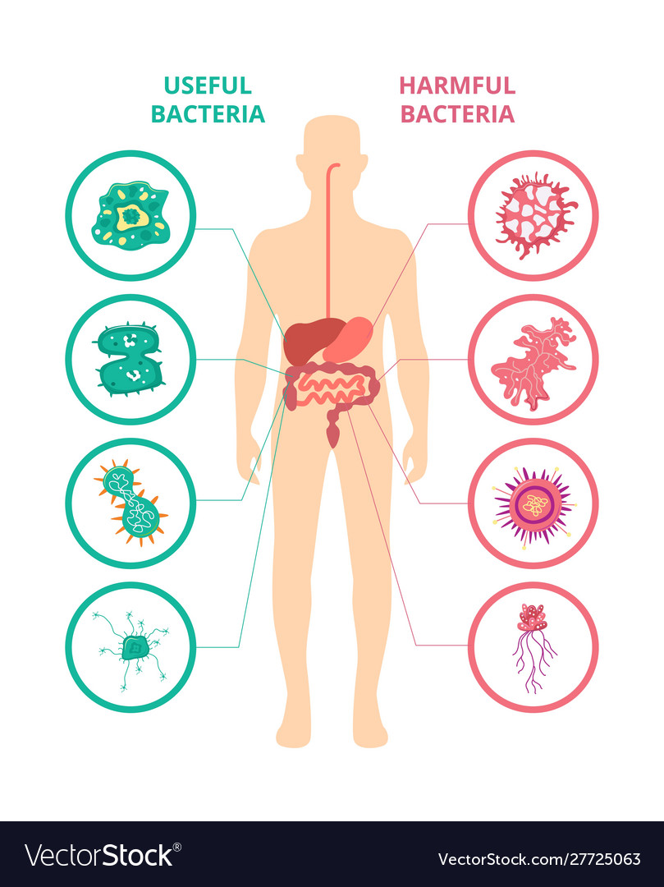

BACTERIA
Bacteria are a type of biological cell. They constitute a large domain of prokaryotic
microorganisms. Typically a few micrometres in length, bacteria have a number of shapes,
ranging from spheres to rods and spirals. Bacteria were among the first life forms
to appear on Earth, and are present in most of its habitats.
What are the 5 types of bacteria?
Bacteria are the plural of bacterium, which are microscopic one-celled organisms. They are
found everywhere and can be harmful, as in infections; or they can be beneficial, as
in fermentation or decomposition. Five types of bacteria are: Coccus,
Bacillus, Spirillum, Rickettsia, and Mycoplasma.

USEFUL BACTERIAS
Bacteria have long been used by humans to create food products such as cheese, yoghurt,
pickles, soy sauce and vinegar. We are also able to use bacteria to break down our
sewage and to clean up oil spills.
Many bacteria are very fast growing
– under ideal conditions, Escherichia coli (E. Coli) are able to double their
number in 20 minutes. This makes them very useful tools in molecular biology and biochemistry,
as they can be manipulated much faster than more complex and slower growing
organisms. We can manipulate bacteria to grow a protein of interest,
for example, insulin, and then grow them in large vats to produce a large
quantity of the desired protein.
